屏東基督教醫院 · 醫師學術演講 · 40 分鐘
肌少症：
篩檢、判定、處置，
潘湘如 醫師｜家醫科 · 減重門診
1 分鐘。自我介紹；今天三個承諾：講完知道怎麼篩、怎麼判、明天回門診就能用的東西。
利益揭露
本場演講的支持與內容原則
支持單位
內容由講者依公開發表文獻自行編寫，亞培（Abbott）未審核或修改科學內容。講者與所討論產品無持股、專利或顧問等其他財務關係。
內容原則
診斷與處置依 AWGS 2019、AWGS 2025、ESPEN／EASO 等共識與同儕審查文獻，每頁附出處
HMB 相關試驗中，Deutz 2013、NOURISH 2016、Cramer 2016 由 Abbott Nutrition 贊助並有其員工為共同作者，解讀時請納入考量；中性與負面結果一併呈現
產品資訊只作為含 HMB 口服營養補充品的例子，實際使用以產品標示與個別評估為準
30 秒。照唸即可。若另有顧問或研究經費，請據實補上。
開場 · 即時投票
您的門診現在怎麼處理肌少症？
2 分鐘。結果落在哪一格都接得上：A、B 多，今天就是要給流程；C 多，重點放在判定與轉介；D 多，請他們等一下分享做法。斷網時畫面會自動提示改口頭舉手。
今天的路線
四十分鐘，三件事，加一組明天就能用的工具
篩
三分鐘找出個案：SARC-F、小腿圍、握力。AWGS 2019 到 2025 的篩檢工具怎麼選。
→
判
切點跟著性別與年齡走；possible sarcopenia 就能開始介入；AWGS 2025 改了什麼。
→
處
刺激肌肉生長的關鍵；阻力運動、蛋白質、HMB 與藥物證據；減重門診的 GLP-1 保肌。
→
工具
篩檢紀錄工具、一頁衛教、運動圖卡、兩款遊戲，現場示範，掃 QR 直接帶走。
門診流程以 AWGS 2019 為基礎；切點均附年份與出處，AWGS 2025 的改動在第 Ⅱ 部分對照。
為什麼是今天
一個減重門診醫師的觀察
減重減掉的不只是脂肪
GLP-1 類藥物減重，減掉的體重中約有 四分之一到四成 是瘦體重。
50 歲以上、原本活動量少的病人，減 10 公斤可能同時減掉 3 公斤肌肉。肥胖型肌少症是門診的日常。
台灣已是超高齡社會
2025 年 65 歲以上人口超過 20%。肌少症是跌倒、骨折、失能、住院與死亡的上游。
它常被當成「年紀大了本來就這樣」，因此很少被主動篩檢。
肌少症可以篩 （三分鐘）、可以逆轉 （阻力運動加蛋白質）、門診就做得到 。
1.5 分鐘。用減重門診的例子開場：病人瘦了很開心，握力卻下降了。
為什麼要在意
後果是一條鏈，肌少症在最上游
→
跌倒
GLIS 2025 結果報告：與跌倒、骨折的關聯屬高證據等級
→
→
失能、長照、死亡
宜蘭世代 11 年追蹤：肌少症與死亡顯著相關
每一個箭頭都是可以介入的位置，愈往上游成本愈低。門診能做的，就是在第一格把人找出來。
GLIS Outcomes Working Group, Aging Clin Exp Res 2025；I-Lan Longitudinal Aging Study 11-year follow-up, J Nutr Health Aging 2023.
Ⅰ
定義怎麼變，數字怎麼讀
從肌肉量走向肌力，再到 2025 年把體能表現移出診斷要件；
Ⅰ · 定義
三十多年的演進：從「肌肉量」走向「肌力」
1989
Rosenberg 提出 sarcopenia（sarx 肌肉、penia 減少）。
2010
EWGSOP 第一版：以肌肉量為核心，加肌力或體能。
2016
ICD-10-CM 給了代碼 M62.84，肌少症成為正式診斷。
2019
EWGSOP2 與 AWGS 2019：肌力成為主角 ；亞洲版新增 possible sarcopenia，讓基層不必量肌肉量就能介入。
為什麼轉向肌力
肌力比肌肉量更能預測跌倒、失能與死亡。
握力計一分鐘量得到；DXA 要排檢。
臨床意涵： 門診沒有 DXA，也可以先判定 possible sarcopenia、先介入，不必等確診。
Ⅰ · 定義
2024 到 2025：GLIS 與 AWGS 2025 的轉向
GLIS 全球共識概念定義（2024）
107 位專家、29 國，Age and Ageing
肌少症 ＝ 肌肉量 ＋ 肌力 ＋ 肌肉特異性肌力
體能表現是結果，不是診斷要件 （97.9% 同意）
AWGS 2025（Nature Aging，2025 年 12 月）
台灣主導（陳亮恭教授），與 GLIS 對齊
診斷簡化為低肌肉量 ＋ 低肌力
取消「嚴重肌少症」分級
新增 50 到 64 歲 專屬切點
歐洲現行仍為 EWGSOP2（2019）；亞洲與台灣的最新依據是 AWGS 2025。
Kirk B, et al. Age Ageing 2024;53:afae052. Chen LK, et al. Nat Aging 2025, doi:10.1038/s43587-025-01004-y.
Ⅰ · 流行病學
台灣的數字：先看定義，再看百分比
8.5%
宜蘭社區 65 歲以上肌少症
28.7%
亞洲合併資料 60 歲以上
50.9%
北台灣日照中心 65 歲以上
社區確診約一成、高風險機構可達半數。同一個定義，場域不同，盛行率差五倍。這就是篩檢要分場域、工具要分社區版與門診版的理由。
I-Lan Longitudinal Aging Study, J Nutr Health Aging 2023；AWGS 2025 解讀, Aging Medicine 2026；北台灣日照中心研究 2021.
Ⅰ · 流行病學
媒體常引用的數字，引用前先問「用什麼定義」
常見說法 來源 怎麼解讀 65 歲以上 34.1% 國民營養調查 106 到 109 年，媒體轉引 定義未公開，疑為小腿圍等廣義風險判定，應稱「篩檢陽性」 男 23.6%、女 18.6% 國健署 2018，二手引用 原始調查與定義查不到，不宜作主要數字 約 7%、推估 30 萬人 Kuo 等 2019，社區 65 歲以上，AWGS 2014 可引用，但為 2014 定義 8.5% I-Lan 世代，AWGS 2019 目前最適合作社區確診盛行率的本土數字
1 分鐘。提醒聽眾：引用百分比時標明「確診」或「篩檢陽性」與定義版本。
Ⅱ
怎麼診斷
AWGS 2019 兩條路徑、切點、量法與分級；
Ⅱ · AWGS 2019 · 現行工具的基礎
路徑一：社區與基層門診，先篩檢
找個案
小腿圍 男 <34、女 <33 cm
→
肌力 或 體能
握力 男 <28、女 <18 kg
→
Possible sarcopenia
任一項低下即成立
這條線就是我們門診工具實作的內容：不需要 DXA，一台平板、一支握力計、一條皮尺、一張椅子就能完成。
Chen LK, et al. AWGS 2019 Consensus Update. J Am Med Dir Assoc 2020;21:300-307.
Ⅱ · AWGS 2019
路徑二：醫院與研究，加上肌肉量才能確診
找個案
同路徑一，加臨床線索：功能下降、非刻意體重減輕、憂鬱、認知障礙、反覆跌倒、營養不良、慢性病
→
肌力 ＋ 體能
握力
→
肌肉量 ASMI
DXA 男 <7.0、女 <5.4 kg/m²
→
肌少症／嚴重
量低 ＋ 力低或能低 ＝ 肌少症
轉介到醫院後走這條線。骨鬆病人排 DXA 時一併做身體組成，是最省事的接口。
Ⅱ · 第一步 找個案
篩檢工具：便宜、快，但要知道它漏什麼
工具 怎麼做 陽性切點 特性與提醒 SARC-F 5 題：搬 4.5 公斤、走過房間、起身、爬 10 階、跌倒次數，各 0 到 2 分 ≥ 4 分 特異度高、敏感度低 ，早期個案會漏 SARC-CalF SARC-F 加小腿圍低於切點加 10 分 ≥ 11 分 敏感度明顯提升，AWGS 2019 建議社區優先用 小腿圍 坐姿、膝踝 90 度、不隔褲襪、最粗處量兩次取大值 男 <34、女 <33 cm 肌肉量的代理指標；水腫、肥胖會高估 指環測試 雙手拇指與食指圈住小腿最粗處 圈得住且有空隙 零工具；AWGS 2025 正式列入
Ⅱ · 第一步 找個案
篩檢的盲點：初篩陰性不等於沒有肌少症
SARC-F 為什麼會漏
問的是「有沒有困難」，早期肌力下降的人多半回答沒有
特異度高、敏感度低：陽性可信，陰性不能排除
加小腿圍（SARC-CalF）能補回一部分，但仍不是實測
有臨床線索，直接量握力
半年內非刻意減重 3 公斤以上
過去一年跌倒，或走路開始需要扶
減重治療中、糖尿病、慢性腎病、癌症
握力一分鐘，比再問一次問卷更可靠
「初篩陰性也能加測」就是為了這群人；加測才發現低下者，結果標「以實測為準」。
Ⅱ · 第二步 肌力與體能
切點跟著性別走：亞洲版與歐洲版不同
項目 AWGS 2019（亞洲，65 歲以上） EWGSOP2（歐洲） 握力 男 <28 kg、女 <18 kg 男 <27 kg、女 <16 kg 五次起坐 ≥ 12 秒 > 15 秒 步速 （6 公尺／4 公尺）< 1.0 m/s ≤ 0.8 m/s SPPB ≤ 9 分 ≤ 8 分 TUG、400 公尺步行 未採用 ≥ 20 秒；≥ 6 分鐘或走不完
門診只要記住 28、18 與 12 秒。閱讀歐洲文獻時要先確認用的是哪一套切點。
AWGS 2019, J Am Med Dir Assoc 2020；Cruz-Jentoft AJ, et al. EWGSOP2. Age Ageing 2019;48:16-31.
Ⅱ · 第二步 肌力與體能
量法一致，數字才能互相比較
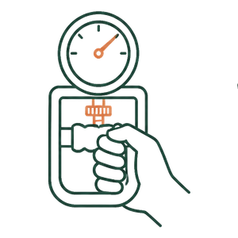
握力
手肘伸直（Smedley 式）或屈 90 度（Jamar 式）擇一固定；雙手各至少 2 次取最大值；記錄握力計型式。
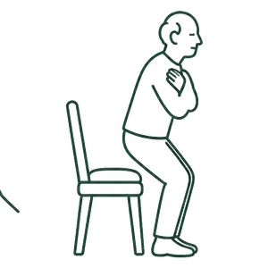
五次起坐
雙手抱胸、不扶、連續站起坐下 5 次計時。門診沒有步行走道時，是最實用的體能指標。
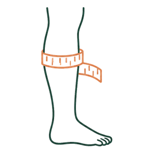
小腿圍
坐姿、膝踝 90 度、不隔褲襪、最粗處水平環繞、量兩次取大值、記到小數一位。
工具畫面上把量測步驟印在欄位旁邊，不同志工量出來的數字才能放在同一張表裡。
Ⅱ · 第三步 肌肉量
確診要量肌肉量：DXA 與 BIA
方法 ASMI 切點（kg/m²，65 歲以上） 提醒 DXA 男 <7.0、女 <5.4 參考標準；輻射極低；需排檢 BIA 男 <7.0、女 <5.7 門診可做；水腫、脫水、剛運動後會失準 ；建議多頻機種
小腿圍不是肌肉量
它只是代理指標。工具與衛教文字一律寫「疑似」，並提示轉介 DXA 或 BIA。
健保現況
DXA 只給付骨鬆 6 項適應症，肌少症與身體組成不給付，自費約 600 到 2,000 元。
Ⅱ · 第三步 肌肉量
正在來的新工具，各在哪個階段
工具 量什麼 目前定位 肌肉超音波 股四頭肌厚度、回音強度 床邊可做；切點尚未統一，AWGS 2025 未列為正式診斷工具 D3-creatine 稀釋法 全身肌肉量 與功能相關性佳；研究用 CT 第三腰椎骨骼肌指數 橫斷面肌肉面積 癌症、外科病人可順便量（opportunistic） 肌肉特異性肌力 握力除以手臂肌肉量 宜蘭世代 2025：比握力更能預測功能退化；GLIS 納入概念定義
Chien et al. J Cachexia Sarcopenia Muscle 2025（ILAS）；GLIS operationalization, J Cachexia Sarcopenia Muscle 2026.
Ⅱ · 判定 · AWGS 2019
分級矩陣：少測一項，就不是完整判定
判定 肌肉量低 肌力低 體能低 對應處置 Possible sarcopenia 未測 任一低下 立即生活介入；轉介確診 Sarcopenia ✓ 任一低下 介入、找原因、3 個月追蹤 Severe sarcopenia ✓ ✓ ✓ 跨團隊：復健、營養、跌倒防治
常見錯誤一
五次起坐沒做就寫「肌力與體能均未達切點」。沒測不等於正常，要標「部分評估」。
常見錯誤二
切點沒跟著性別。男性握力 26 kg 是低下，女性 26 kg 是正常。切點要印在數字旁邊。
Ⅱ · AWGS 2025
AWGS 2025 改了什麼：三個改動
面向 AWGS 2019 AWGS 2025 診斷要件 肌肉量低 ＋（肌力低 或 體能低） 肌肉量低 ＋ 肌力低 體能表現 診斷要件之一 改為結果指標，用於追蹤與預後 分級 可能、肌少症、嚴重 肌少症風險、可能肌少症、肌少症 年齡 65 歲以上 新增 50 到 64 歲切點 篩檢工具 小腿圍、SARC-F、SARC-CalF 同左，加指環測試
「肌少症風險」：肌力尚正常，但有慢性病、營養不良或非預期體重減輕，每年評估一次。
Chen LK, et al. Nat Aging 2025；Won CW, Jung H. Ann Geriatr Med Res 2025.
Ⅱ · AWGS 2025
新切點表，與門診要不要跟著改
切點 50 到 64 歲 男／女 65 歲以上 男／女 握力 <34／<20 kg <28／<18 kg ASMI，DXA <7.2／<5.5 <7.0／<5.4 ASMI，BIA <7.6／<5.7 <7.0／<5.7 五次起坐（結果指標） ≥ 10 秒 ≥ 12 秒 步速（結果指標） < 1.2 m/s < 1.0 m/s
門診要不要跟著改
65 歲以上握力切點沒變 ，現有流程照用
五次起坐仍要量，用途改為追蹤
50 到 64 歲 的減重、糖尿病病人納入篩檢，用新切點 結果文字不再寫「嚴重肌少症」
50 到 64 歲切點來自日本、馬來西亞、台灣 8 個世代約 35,000 人合併分析，J Cachexia Sarcopenia Muscle 2025, doi:10.1002/jcsm.13731.
1.5 分鐘。50 到 64 歲這群是減重門診的主力，要開始篩。
Ⅱ · 台灣的政策接口
能借力的：長者量六力與社區資源
國健署「長者量六力」（WHO ICOPE）
65 歲以上，原住民 55 歲以上；六力：認知、行動、營養、視力、聽力、憂鬱
行動力：五次起坐 ≤ 14 秒 （WHO 標準；AWGS 用 12 秒）
營養：3 個月內體重減 3 公斤或食慾差
異常者轉家醫科或老年醫學門診；LINE 官方帳號 @hpaicope
社區運動與長照
全台近 4,000 處據點提供六力評估
銀髮健身俱樂部 2021 到 2025 布建 288 處
長照 3.0（2026 到 2035）延續六力評估、社區營養風險篩檢、長者運動
核定本寫「衰弱」28 次、「肌少症」0 次
ICOPE 異常的個案接到門診，用握力與 SARC-CalF 判定，再轉介社區據點做阻力運動。給付與計畫內容以就診當時公告為準。
Ⅲ
門診怎麼做：把流程做成工具
單頁網頁、可離線、平板與手機都能用。現場走一遍，看流程怎麼變成畫面。
SARC-CalF 初篩後接 AWGS 2019 判定；切點顯示在數字旁；陽性自動出衛教 QR；資料去識別化送 Google 試算表。點畫面外空白處可恢復翻頁。
3 分鐘。示範：選工作站，填 SARC-F 與小腿圍，初篩陽性，握力與五次起坐，出判定與 QR。用「男性、握力 26」讓大家看到切點在旁邊。建議先在新視窗開好備用。
Ⅲ · 工具背後
做工具時的五個取捨，每一條都對應一個真實事故
1 初篩陰性也能加測
SARC-F 敏感度有限；加測才發現的個案標「以實測為準」。
2 少測一項就標「部分評估」
五次起坐留空，不得寫「均未達切點」。
3 切點跟著性別印在數字旁
現場能核對，事後能回查。
4 不收姓名、電話、出生月日
只送代號、出生年、性別、測量值；姓名留紙本對照表。
5 當日 n 小於 10 不顯示百分比
小樣本比例不穩定，只列分子分母。
下一版待改
AWGS 2025 之後：結果文字移除「嚴重肌少症」、加入 50 到 64 歲切點。
Ⅳ
怎麼處置
先看肌肉為什麼會長、為什麼會掉；再看運動、蛋白質、HMB 與藥物的證據；最後是減重門診的 GLP-1 保肌處方。
Ⅳ · 總覽
介入四支柱：前兩根有證據，後兩根看情境
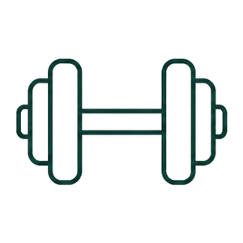
阻力運動
每週 2 到 3 次、漸進負荷。證據最強、效果最大。
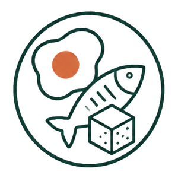
蛋白質
1.2 到 1.5 g/kg/day，三餐平均、每餐 25 到 30 g。
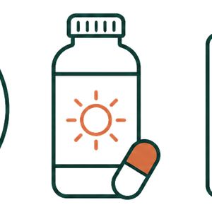
HMB 與營養補充
住院、臥床、攝食不足者；搭配運動與足量蛋白質才有意義。
追蹤與轉介
3 個月回測握力與起坐；復健、營養師、跌倒防治。
運動是主菜，蛋白質是配菜，補充品是調味。沒有主菜，其他都沒有作用。
Ⅳ · 肌肉為什麼會長
刺激肌肉生長的四個關鍵
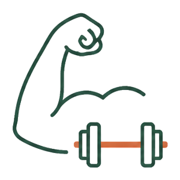
機械刺激
阻力收縮啟動 mTORC1；運動後對胺基酸的敏感度持續 24 小時以上。
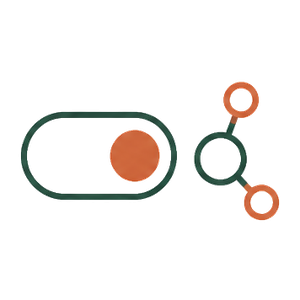
白胺酸閾值
老年人每餐約 2.5 到 3 g 白胺酸（25 到 30 g 優質蛋白）才開得了合成開關。
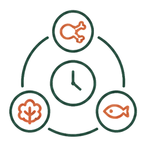
總量與分配
一天 1.2 到 1.5 g/kg，三餐平均；集中在晚餐，24 小時合成量少 25%。
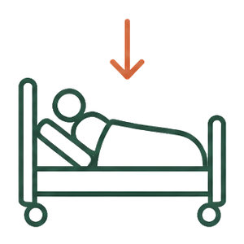
減少不動與發炎
臥床、急性疾病、慢性發炎會打開分解路徑，抵銷合成。
合成阻抗 ：老年人每餐飽和劑量約 0.40 g/kg（年輕人 0.24），但運動後多數研究看不到年齡差異 。
Moore 2015 J Gerontol A；Burd 2011 J Nutr；Mamerow 2014 J Nutr；Kristiansen 2026 Front Physiol.
1.5 分鐘。這頁是 HMB 的鋪陳：開關、閾值、分解。合成阻抗可以被運動抵銷，是給醫師的核心訊息。
Ⅳ · 肌肉為什麼會掉
不動的代價：健康老年人臥床十天
−1.5kg
全身瘦體重（腿部 −0.95 kg）
−13%
膝伸肌力
10天
老年人 10 天流失的腿部瘦體重
急性住院、術後、感染，是門診病人肌肉量「斷崖式」下降的時間點。這段期間早期活動加口服營養補充，是 ESPEN 老年臨床營養指引的 A 級建議；HMB 的證據也最集中在這裡。
Kortebein P, et al. JAMA 2007；Kortebein P, et al. J Gerontol A 2008（n=11 到 12，60 到 85 歲）；English KL, Paddon-Jones D. Curr Opin Clin Nutr Metab Care 2010；Volkert D, et al. ESPEN, Clin Nutr 2022.
Ⅳ · HMB
HMB 是什麼，為什麼從飲食很難補到
β-hydroxy-β-methylbutyrate
白胺酸的代謝產物；只有約 5% 的白胺酸走這條路徑
研究劑量 3 g HMB 需約 60 g 白胺酸，估算相當於 600 g 優質蛋白質
天然食物含量極微，沒有可靠定量資料；試驗一律用補充劑或含 HMB 的營養品
機轉與劑量
人體單劑研究：肌肉蛋白合成 +70%、分解 −57%
活化 mTORC1；抑制 ubiquitin-proteasome 分解路徑
3 g/日 （1.5 g 早晚各一）；連續使用 1 年的安全性資料良好
定位：降低合成的啟動門檻，同時踩住分解 ；它不取代蛋白質，也不取代運動。
Van Koevering 1992；Wilson 2008；Wilkinson DJ, et al. J Physiol 2013；ISSN position stand 2024.
1.5 分鐘。600 g 優質蛋白是估算值，講的時候說「估算」。
Ⅳ · HMB
HMB 的臨床證據：哪些族群、多大效果
研究與族群 結果（95% 信賴區間） Deutz 2013 ，Clin Nutr瘦體重：安慰劑 −2.05 kg、HMB −0.17 kg（p=0.02）；功能無差異 NOURISH 2016 ，Clin Nutr主要複合終點（死亡或再住院）無差異；90 天死亡率 4.8% 對 9.7%（RR 0.49，NNT 20） 統合分析 2025 ，Front Nutr瘦體重 +0.28 kg、握力 +0.54 kg、步速 +0.06 m/s；3 g/日且超過 12 週較明顯 統合分析 2026 ，Age Ageing肌肉量 SMD 0.05、肌力 SMD 0.04，無額外效益
獲益較明確 ：住院、臥床、營養不良、髖部骨折術後、無法運動者。要誠實講的 ：效應量小到中等，對日常功能與跌倒證據不足（Phillips 2022 傘狀回顧）。
1.5 分鐘。NOURISH 的死亡率是次要終點，主要終點沒差，要講清楚。
Ⅳ · HMB
含 HMB 的口服營養補充品：對誰用、怎麼用
適合的病人
住院、術後、臥床或活動量驟減的老年人
營養不良或體重正在下降（半年 3 公斤以上）
可能肌少症或肌少症，飲食蛋白質達不到 1.2 g/kg 者
能規律做阻力運動、營養充足者，不需常規加用
怎麼用
研究劑量 HMB 3 g/日 ，連續至少 12 週 ，3 個月回測握力與起坐
與每餐 25 到 30 g 蛋白質、阻力運動並行；當作餐間補充，不取代正餐
處方前評估腎功能、血糖與整體熱量需求
例：安素 HMB 升級配方（Abbott，237 mL）每份熱量 262 kcal、蛋白質 10.5 g、CaHMB 約 0.75 g、維生素 D 4.6 µg。一天兩份約 1.5 g CaHMB，為 NOURISH 與臥床試驗劑量的一半 ；要達研究劑量須考量份數與熱量，並以罐身標示為準。
1 分鐘。產品只講「例子」與適應族群，不講療效字眼；劑量差異要講，這是聽眾會問的。
Ⅳ · 支柱一
運動處方怎麼開：FITT
FITT 阻力訓練為主 頻率 每週 2 到 3 次，隔天做 強度 由輕漸進；自覺費力 5 到 7 分（滿分 10）；每組最後 2 下有點吃力 時間與量 大肌群 6 到 8 個動作，8 到 12 下、2 到 3 組，約 20 到 30 分鐘 型態 自體重、彈力帶、啞鈴、機器都可；加平衡訓練與有氧（每週 150 分鐘）
停止訊號
喘到說不出話、胸悶、頭暈就停。心臟病、術後、關節嚴重疼痛者先評估。
病人最需要聽到的一句
散步對心肺很好，但練不到肌肉。肌肉要對抗阻力才會長。
ICFSR 2018；AWGS 2025；Front Nutr 2025 network meta-analysis.
Ⅳ · 支柱一 · 運動圖卡
門診三分鐘教得會：肌力動作
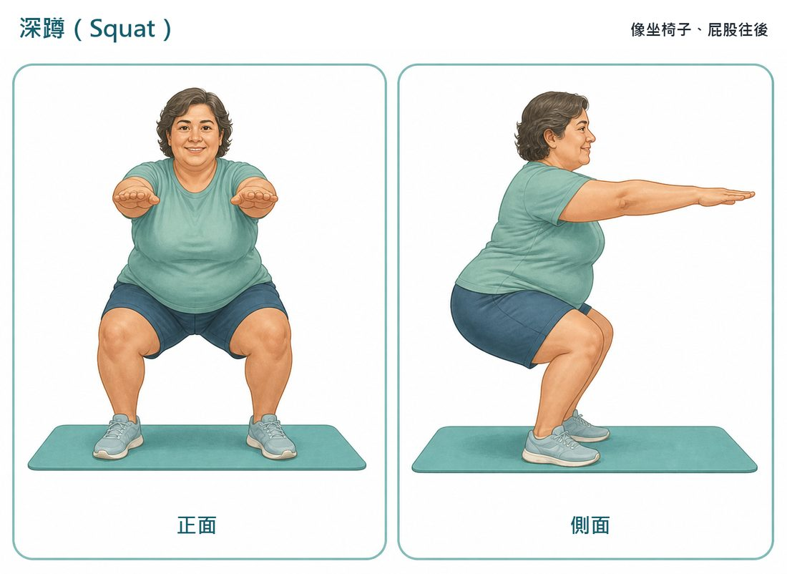
深蹲 像坐椅子、屁股往後、膝蓋不超過腳尖；扶椅背做也可以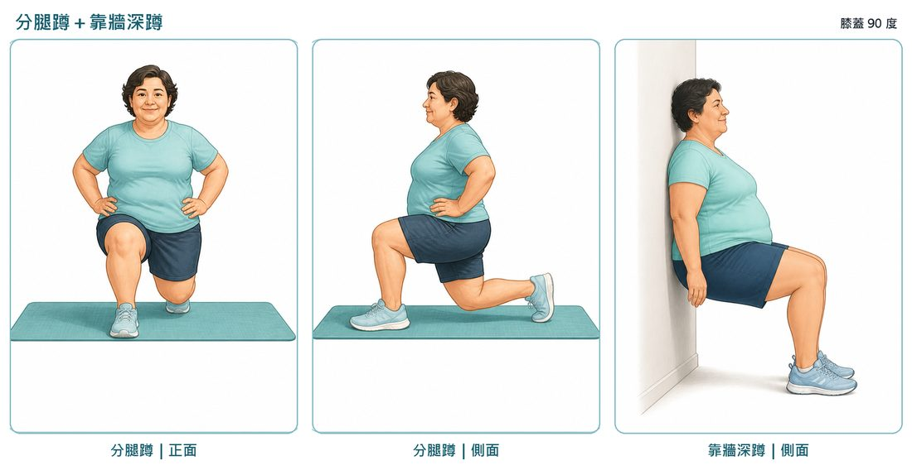
分腿蹲、靠牆深蹲 膝蓋都是 90 度；靠牆版本對膝蓋負擔較小
圖卡取自本院運動衛教（醫師審定 2026-09-10），同一位主角示範，病人在衛教網站可以自己對照。10 下一組、2 到 3 組；隔天肌肉痠是正常，痛在關節才要停。
Ⅳ · 支柱一 · 運動圖卡
核心菜單與原地有氧
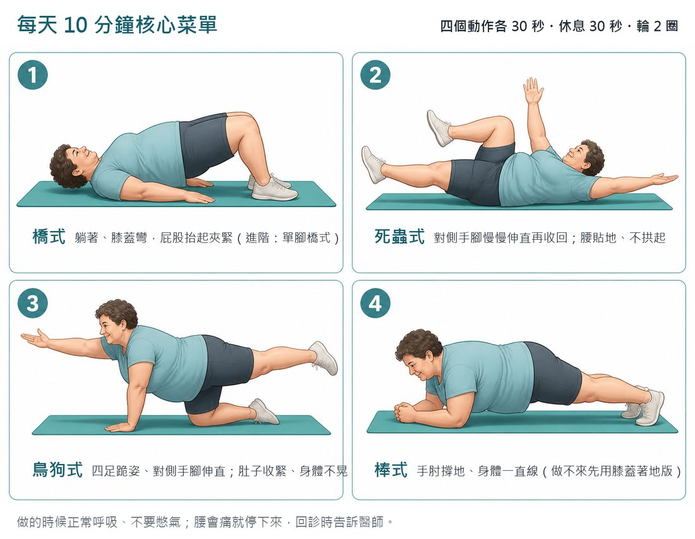
每天 10 分鐘核心菜單
橋式、死蟲式、鳥狗式、棒式：四個動作各 30 秒、休息 30 秒、輪 2 圈。腰貼地、不憋氣。
湊每週 150 分鐘的原地運動
原地抬膝（膝蓋 90 度）、原地開合跳、甩壺鈴（進階，需器材）。會喘但還能講話，就是中等強度。
本院運動衛教圖卡，healthy-weight-public/move.html（醫師審定 2026-09-10）；WHO 身體活動指引.
Ⅳ · 支柱二
蛋白質怎麼吃：總量夠、每餐分、白胺酸要到
對象 每日蛋白質 健康長者 1.0 到 1.2 g/kg 肌少症、急慢性病、住院 1.2 到 1.5 g/kg AWGS 2025 65 歲以上 1.2 到 1.6；65 歲以下 ≥ 1.6 g/kg 嚴重疾病、傷口、營養不良 最高 2.0 g/kg 慢性腎病未透析 個別化，與腎臟科、營養師討論
每餐分配
每餐 25 到 30 g （約 0.4 g/kg），白胺酸 2.5 到 3 g ，才能觸發肌肉合成。
集中在晚餐吃，肌肉利用不了。運動後 1 到 2 小時內補一份效果更好。
PROT-AGE Study Group, J Am Med Dir Assoc 2013；ESPEN geriatrics guideline, Clin Nutr 2022；AWGS 2025；日本老年醫學會營養管理指引 2025.
Ⅳ · 支柱二
病人聽得懂的版本：一份是多少
衛教頁原文
60 公斤的長輩一天約 72 到 90 公克 。
重點是三餐平均分配 ，每餐吃到 2 到 3 份 。
牙口不好就換型態：豆腐、蒸蛋、魚肉、絞肉、奶類、無糖豆漿。
體重正在下降的長輩，先不要限制熱量。
一份約 7 公克 例子 雞蛋 1 顆 牛奶 1 杯 240 c.c.（約 8 g） 嫩豆腐 半盒 魚或肉 一個女性掌心大小、厚度像小指，約 21 g（算 3 份）
醫師版與病人版並排，門診講的時候切換兩種語言；病人回家掃 QR 看到的是同一套。
Ⅳ · 支柱三
其他補充品：證據到哪裡
項目 證據 門診建議 維生素 D 單獨補充無效（2022 統合分析）；PROVIDE（乳清加白胺酸加 800 IU D，13 週）：起坐 −1.0 秒、四肢肌肉量 +0.17 kg，握力與 SPPB 無差異 不足者補到足夠，800 到 1,000 IU/日 口服營養補充品 住院營養不良者為 ESPEN A 級建議；搭配運動才看得到肌力改善 攝食不足、體重下降者 肌酸 與阻力運動併用：下肢肌力 SMD 0.29、瘦體重 SMD 0.27 做阻力訓練者可考慮 3 到 5 g/日 Omega-3、益生菌 對肌肉蛋白合成無效；證據小而不一致 AWGS 2025 列為低證據等級
Vitamin D monotherapy meta-analysis 2022（PMID 35261183）；Bauer JM, et al. PROVIDE, J Am Med Dir Assoc 2015；Liu et al. Eur Rev Aging Phys Act 2025；Therdyothin A, et al. Nutr Rev 2025；AWGS 2025.
Ⅳ · 支柱三
藥物：尚無核准適應症，試驗多是「減重藥加保肌藥」
試驗 組合 主要結果 BELIEVE bimagrumab ＋ semaglutide 72 週減重 22.1%，92% 為脂肪；瘦體重 −2.9%（semaglutide 單用 −7.4%） EMBRAZE apitegromab ＋ tirzepatide 24 週多保留約 2 kg 瘦體重；脂肪占減重 85%（對照 70%） COURAGE trevogrumab ± garetosmab ＋ semaglutide 瘦體重流失約減半；三聯組耐受性差 QUALITY 60 歲以上 enobosarm ＋ semaglutide 瘦體重流失 1.2%（對照 4.1%）
機轉多為 myostatin／activin 路徑。目前能開的處方仍是運動、蛋白質與營養補充。
Ⅳ · 減重門診的特別議題
肥胖型肌少症：ESPEN／EASO 2022 怎麼定義
篩檢
BMI ≥ 30 或腰圍偏高（亞洲用族群切點）
→
診斷一：肌肉功能
握力（亞洲用 AWGS 切點）
→
診斷二：身體組成
DXA 四肢瘦體重／體重偏低
→
肥胖病人的 BMI 與小腿圍都會「正常」，肌少症只能靠握力與身體組成抓出來。減重門診的第一次評估就該量握力。
Donini LM, et al. ESPEN and EASO consensus statement. Clin Nutr 2022;41:990-1000.
Ⅳ · 減重門診的特別議題
GLP-1 減重會掉多少肌肉
−9.7%
STEP 1 DXA 次研究
26%
SURMOUNT-1
−1.7kg
2026 統合分析，7 篇 RCT
只有 43% 的使用者蛋白質達 1.2 g/kg
平均攝取約 77 g/日。減重期食慾下降，蛋白質是最先掉的。
瘦體重下降不等於肌少症
要併功能判定：握力、起坐。停藥後體重回升而肌肉不回來，是肥胖型肌少症的潛在機轉。
STEP 1 DXA substudy；SURMOUNT-1；Int J Obes 2026 meta-analysis, doi:10.1038/s41366-026-02118-y；J Nutr Health Aging 2025.
Ⅳ · 減重門診的特別議題
減重門診的保肌處方
開藥前
量握力、五次起坐、BIA 或 DXA 基準值
50 到 64 歲用 AWGS 2025 新切點
65 歲以上、糖尿病、低活動量者優先
治療中
蛋白質 1.2 到 2.0 g/kg （實際體重），每餐 25 到 30 g
阻力運動每週 2 到 3 次 是處方的一部分減速：每週不超過體重 0.5 到 1%
吃不到目標者，可用高蛋白口服營養品補足；HMB 在 GLP-1 使用者尚無 RCT
追蹤 ：滴定完成後及每 3 到 6 個月回測身體組成與功能；握力下降或瘦體重掉太快就調整劑量、加強運動。停藥前先確認肌力 。
Metabolites 2026；Pharmaceuticals 2026；ESPEN/EASO 2022.
Ⅴ
衛教要能落地
一頁衛教、五題闖關、一款動作遊戲。內容審定一次，所有載體共用。
篩檢陽性時
不含任何個人資料
現在就掃，用手機玩
移動手臂接蛋白質與出力運動，閃開沙發與電視；每過一關送一則存肌小知識。
2 分鐘。讓大家掃碼玩，投影上自己玩一關，過關時停在知識卡念出來。
Ⅴ · 設計理由
為什麼衛教要做成遊戲
先玩再讀
長者拿到衛教單多半不看；遊戲把「三句話」變成要過關才看得到的獎勵。
內容不另寫
九則知識卡與五題題目逐字取自審定的衛教頁；遊戲與紙本不會說兩套。
給長輩用的細節
主角用手繪不用 emoji（舊手機缺字會空白）；觸控拖曳；配色固定亮色；字級不縮。
帶走三句話
蛋白質三餐平均分配；要出力，散步不夠；半年瘦 3 公斤要就醫。
另有 Wordwall 10 題測驗，可分享、可現場競賽排行榜。工具、衛教、遊戲都以 CC BY-NC-ND 4.0 公開，可直接拿去用。
課尾 · 即時文字雲
回去之後，您會先改門診的哪一件事？
結論
帶回去的三件事
1 篩：三分鐘
SARC-F 加小腿圍（SARC-CalF ≥ 11）。半年瘦 3 公斤、跌倒、走路變慢、減重治療中，直接量握力。
2 判：切點跟著性別與年齡
65 歲以上握力男 <28、女 <18 kg；50 到 64 歲男 <34、女 <20 kg。Possible sarcopenia 就開始介入，確診再排 DXA 或 BIA。
3 處：主菜是運動
阻力運動每週 2 到 3 次；蛋白質 1.2 到 1.5 g/kg 三餐平均；住院、臥床、吃不夠者加 HMB 口服營養品；3 個月回測。
篩檢工具、衛教頁、運動圖卡、遊戲都是公開網址，掃下一頁的 QR 明天就能用。
謝謝，一起把病人的肌肉留住
潘湘如 醫師｜家醫科 · github.com/philia81301-commits/sarcopenia-clinic · © 2026 CC BY-NC-ND 4.0 · 簡報與程式實作由 Claude 協助
參考文獻
指引與主要文獻
Chen LK, et al. A focus shift from sarcopenia to muscle health in the AWGS 2025 Consensus Update. Nat Aging 2025. doi:10.1038/s43587-025-01004-y
Chen LK, et al. Asian Working Group for Sarcopenia: 2019 Consensus Update. J Am Med Dir Assoc 2020;21:300-307.
Chen LK, et al. Mapping normative muscle health metrics across 8 Asian cohorts. J Cachexia Sarcopenia Muscle 2025. doi:10.1002/jcsm.13731
Kirk B, et al. The Conceptual Definition of Sarcopenia: GLIS. Age Ageing 2024;53:afae052.
Cruz-Jentoft AJ, et al. Sarcopenia: revised European consensus (EWGSOP2). Age Ageing 2019;48:16-31.
Donini LM, et al. ESPEN and EASO consensus on sarcopenic obesity. Clin Nutr 2022;41:990-1000.
I-Lan Longitudinal Aging Study, 11-year mortality follow-up. J Nutr Health Aging 2023. doi:10.1016/j.jnha.2023.100208
Bauer J, et al. PROT-AGE Study Group. J Am Med Dir Assoc 2013;14:542-559.
Bauer JM, et al. PROVIDE study. J Am Med Dir Assoc 2015;16:740-747.
Volkert D, et al. ESPEN practical guideline: clinical nutrition and hydration in geriatrics. Clin Nutr 2022;41:958-989.
Kortebein P, et al. JAMA 2007;297:1772-1774；Kortebein P, et al. J Gerontol A 2008;63:1076-1081.
Moore DR, et al. J Gerontol A 2015;70:57-62；Kristiansen JB, et al. Front Physiol 2026.
Wilkinson DJ, et al. J Physiol 2013;591:2911-2923；Rathmacher JA, et al. ISSN position stand on HMB. JISSN 2024.
Deutz NE, et al. HMB and lean body mass during 10 days of bed rest in older adults. Clin Nutr 2013;32:704-712.
Deutz NE, et al. NOURISH study. Clin Nutr 2016;35:18-26.
Li N, et al. HMB in adults over 50: meta-analysis of 21 RCTs. Front Nutr 2025. doi:10.3389/fnut.2025.1522287
Wang G, et al. Resistance training with or without HMB in older adults: meta-analysis. Age Ageing 2026. doi:10.1093/ageing/afag073
Phillips SM, et al. Umbrella review of HMB. J Cachexia Sarcopenia Muscle 2022. doi:10.1002/jcsm.13030
Cramer JT, et al. J Am Med Dir Assoc 2016；Rathmacher JA, et al. J Gerontol A 2020.
GLP-1 receptor agonists and lean mass: meta-analysis of 7 RCTs. Int J Obes 2026. doi:10.1038/s41366-026-02118-y
BELIEVE: bimagrumab plus semaglutide. Nat Med 2026. doi:10.1038/s41591-026-04204-0
EMBRAZE: apitegromab plus tirzepatide. Nat Med 2026. doi:10.1038/s41591-026-04440-4
衛生福利部國民健康署．長者功能評估（長者量六力）；長照 3.0 核定本（2025 年 12 月）。
本院運動衛教圖卡與肌少症衛教頁（醫師審定，2026 年 8 到 9 月）。